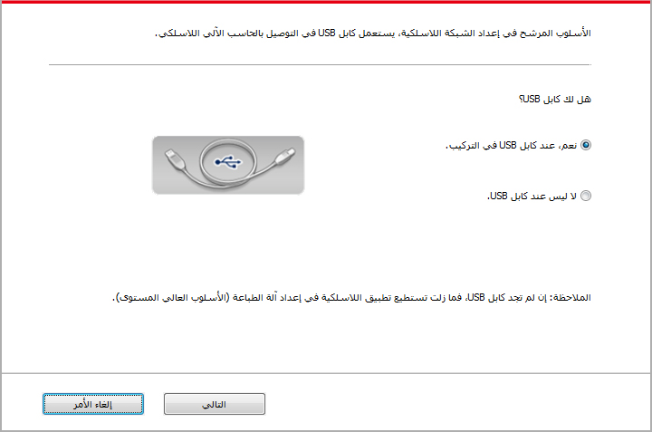
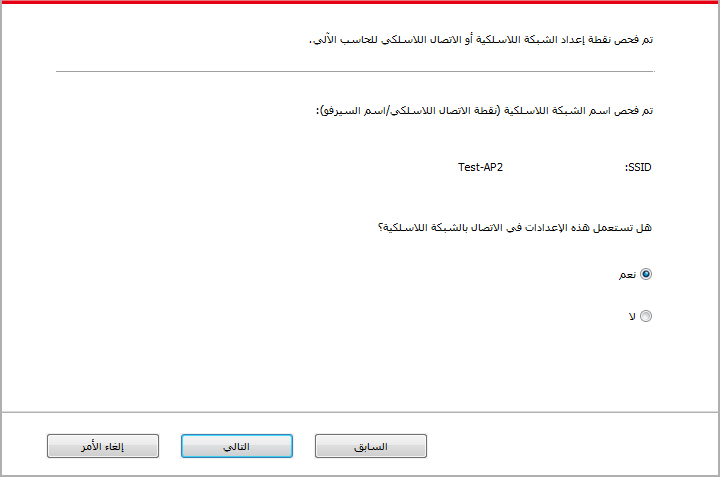
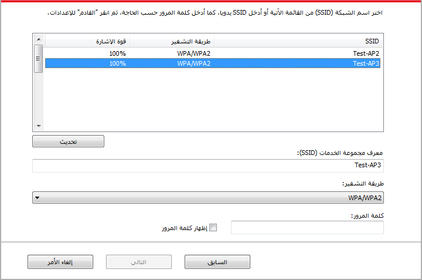
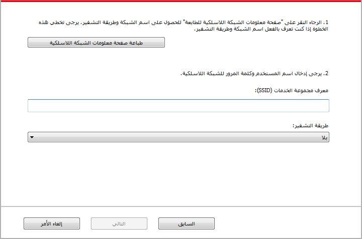
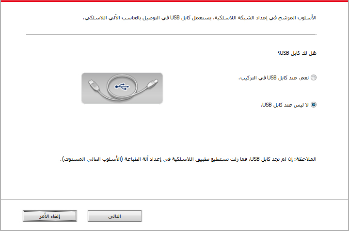
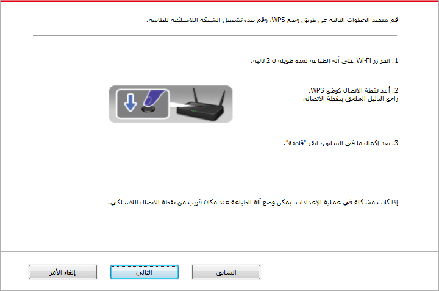
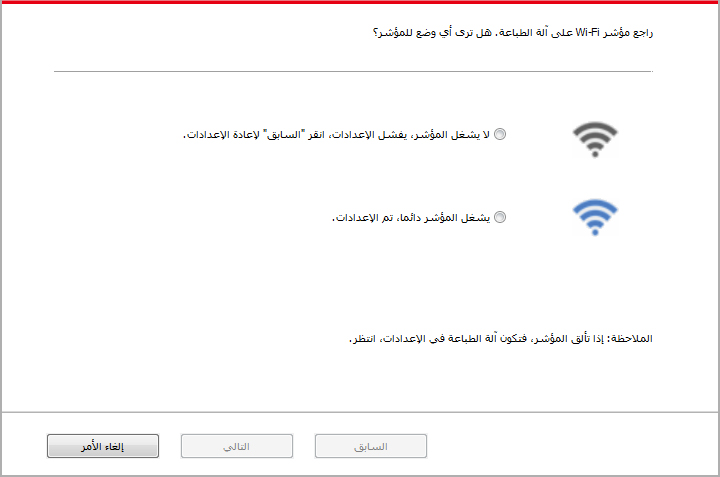

5. إعدادات الشبكة اللاسلكية (يناسب موديل Wi-Fi)
تبعاً للنموذج، فإن نموذج الطابعة بخاصية الطباعة بتقنية الاتصال اللاسلكي تدعم نوعين من الاتصال بWi-Fi، أحدهما الخاص بالبنية التحتية والآخر الخاص بالاتصال نقاط الاتصال المحمولة لل اللاسلكية. بشكل عام، هناك نوع واحد فقط من الاتصال ما بين الحاسب الآلي والطابعة في آن واحد. في حالة مواجهتك لمشكلات في خضم عملية ضبط إعدادات شبكة اللاسلكية، برجاء العودة إلى الفصل 5.3 "المشكلات المعتادة بشكل عام المتعلقة بضبط شبكة الاتصال اللاسلكي".
 |
وضع الهيكل الأساسي: يوصل بالجهاز اللاسلكي عبر الروتر 1. نقطة التوصيل (الروتر اللاسلكي). 2. آلة الطباعة المجهزة بالشبكة اللاسلكية. 3. يوصل بالحاسب الآلي لنقطة التوصيل عبر الشبكة اللاسلكية. 4. يوصل بالحاسب الآلي بنقاط الوصيل عبر الشبكة. |
|
|
وضع اتصال النقاط الساخنة Wi-Fi التوصيل المباشر بين الحاسب الآلي اللاسلكي والجهاز اللاسلكي. |

5.1. وضع الهيكل الأساسي
مكنكم اتخاذ نقاط التوصيل (الروتر اللاسلكي) كالوسائط في التوصيل بين الحاسب الآلي وآلة الطباعة. تنقسم نقاط التوصيل (الروتر اللاسلكي) إلى أدوات تجهيز الشبكة اللاسلكية و (Wi-Fi Protected Setup (WPS.
هام:قبل تركيب الشبكة اللاسلكية، يجب معرفة اسم الشبكة (SSID) وكلمة المرور لنقطة التوصيل (الروتر اللاسلكي)، يحتاج إلى الاستعمال عند تجهيز الشبكة اللاسلكية. إذا لم يمكن تحديده، فاستفسر مدير الشبكة أو مصنع نقطة الاتصال (الروتر اللاسلكي).
5.1.1. أدوات إعداد الشبكة اللاسلكية
إذا كان الحاسب الآلي لكم تركب برنامج التشغيل ويتصل بالشبكة اللاسلكية لكن تغيرت الشبكة اللاسلكية فيمكن إعادة الإعداد عبر أدوات إعداد الشبكة اللاسلكية.
5.1.1.1. الاستعدادات الأولى
1. نقطة التوصيل (الروتر اللاسلكي).
2. الحاسب الآلي المتصل بالشبكة.
3. آلة الطباعة المجهزة بوظيفة الشبكة اللاسلكية.
5.1.1.2. أسلوب إعداد أدوات إعداد الشبكة اللاسلكية
1. يجهز أدوات إعداد الشبكة اللاسلكية في الحاسب الآلي.
1) نظام Windows:انقر قائمة "بدأ" للحاسب الآلي - "جميع البرامج" - "Pantum" - "اسم المنتج" - "أدوات إعداد الشبكة اللاسلكية".
2) نظام Mac:انقر قائمة Finder "إلى" للحاسب الآلي - "برنامج التطبيق" - "Utilities" - "Pantum" -"Wireless Network Configuration Tool".
2. يستعمل سلك يوسبي في إعداد الاتصال.
في الواجهة الآتية، اختر "نعم، عندي سلك يوسبي في التركيب". انقر "الخطوة القادمة".

2.1 تم اتصال الحاسب الآلي بالشبكة اللاسلكية.
1) يختار افتراضيا اتصال الحاسب الآلي بالشبكة اللاسلكية بأدوات إعداد الشبكة اللاسلكية ويكمل الإعدادات حسب ملاحظة الواجهة.

 |
لملاحظة: |
• يجب أن يوافق اسم الشبكة المختار (SSID) مع اسم الشبكة (SSID) لنقطة الاتصال (الروتر اللاسلكي) للحاسب الآلي. |
2）عند الحاجة إلى الاتصال بالشبكة اللاسلكية الأخرى، اختر "لا" في إعداد الشبكات اللاسلكية الأخرى وأكمل الإعدادات حسب ملاحظة الواجهة.

|
الملاحظة: |
• حاليا، تدعم آلة الطباعة ثلاثة أنواع من أوضاع السلامة: دون، WEP وWPA/WPA2. 1) دون: لم يستعمل أي أسلوب تشفير. 2) WEP: يرسل ويتلقي البيانات عبر WEP (التشفير أولاين) ومفتاح الأمان. يناسب مفتاح أمان WEP تشفير الشبكة من 64 بت و128 بت، يتضمن الأعداد والأحرف. 3) WPA/WPA2: يكون مفتاح الأمان المشترك الموصل لحماية Wi-Fi، يوصل الجهاز اللاسلكي مع نقطة الاتصال عبر تشفير TKIP أو AES (WPS－Personal). يستعمل WPA/WPA2 مفتاح الأمان (PSK) المشترك المسبق بالطول بين 63-8 حرف. • من الافتراضي عدم خيار "عرض كلمة المرور"، إذا اختاره، فتعرض كلمة المرور الدخلة. |
2.2 لم يتصل الحاسب الآلي بالشبكة اللاسلكية.
في الواجهة الآتية، أدخل اسم الشبكة SSID (تمييز الأحرف الكبيرة والصغيرة ل SSID) لنقطة الإدخال روتر اللاسلكي) وكلمة المرور وأكمل الإعدادات حسب ملاحظة الواجهة.

|
لملاحظة: |
• إذا كنت غير واضح لاسم الشبكة (SSID) لنقطة الاتصال (الروتر اللاسلكي)، فانقر "طباعة صفحة بيانات الشبكة اللاسلكية" لمراجعة اسم الشبكة (SSID) لنقطة الاتصال (الروتر اللاسلكي) المطلوب. • بعد تم إعداد الشبكة اللاسلكية، إذا لم يمكن استعمال آلة الطباعة، فأعد تثبيت برنامج التشغيل. |
3.استعمل اتصال WPS.
في الواجهة الآتية، اختر "لا، ليس عندي سلك يوسبي". انقر "القادم".

1) قم بتنفيذ الخطوات التالية عن طريق وضع WPS، وقم ببدء تشغيل الشبكة اللاسلكية للطابعة. (فيما يتعلق بإعدادات WPS، راجع الفص 5.1.2 )

2) يمكن تحديد ما إذا كانت آلة الطباعة تتصل بشكل ناجح حسب وضع مؤشر Wi-Fi على آلة الطباعة. إذا فشل الإعدادات، فانقر "سابق" لإعادة الإعدادات؛ إذا تم الإعدادات، انقر زر "تم" لإكمال الإعدادات.

|
لملاحظة: |
• بعد تم إعداد الشبكة اللاسلكية، إذا لم يمكن استعمال آلة الطباعة، فأعد تثبيت برنامج التشغيل. |
5.1.2. إعدادات (Wi-Fi Protected Setup (WPS
إذا كانت نقطة الاتصال (الروتر اللاسلكي) تدعم (Wi-Fi Protected Setup (WPS، فيمكن ضغط زر Wi-Fi على لوحة تحكم آلة الطباعة وزر WPS على (الروتر اللاسلكي) مما تتصل آلة الطباعة بالشبكة اللاسلكية.
5.1.2.1. الاستعدادات المسبقة
1. نقطة الاتصال (الروتر اللاسلكي) يدعم (Wi-Fi Protected Setup (WPS.
2. آلة الطباعة المجهزة بوظيفة الشبكة اللاسلكية.
5.1.2.2.أسلوب إعداد (Wi-Fi Protected Setup (WPS
1. يشغل آلة الطباعة ومصدر الكهرباء لنقطة الاتصال (الروتر اللاسلكي).
2. اضمن أن آلة الطباعة في وضع استعداد.
|
الملاحظة: |
• إذا دخلت آلة الطباعة إلى وضع النوم، فاضغط أي زر على لوحة تحكم آلة الطباعة، تنشطها. |
3. اضغط "زر Wi-Fi" على لوحة تحكم آلة الطباعة أعلى 2 ثانية حتى يتألق المصباح الأزرق لمصباح Wi-Fi، ثم خففه.
4. اضغط "زر WPS" على نقطة الاتصال (الروتر اللاسلكي) داخل دقيقتين، ثم خففه.
5. يجري اتصال الشبكة اللاسلكية بين نقطة الاتصال (الروتر اللاسلكي) وآلة الطباعة، يتألق المصباح الأزرق لمصباح Wi-Fi لآلة الطباعة. بعد الاتصال، يشغل المصباح الأزرق لمصباح Wi-Fi لآلة الطباعة دائما .
إذا لم يقم الاتصال أكثر دقيقتين، فترجع آلة الطباعة إلى وضع الاستعداد، يطفئ مصباح Wi-Fi ، يفشل اتصال (Wi-Fi Protected Setup (WPS. يحتاج إلى إعادة الاتصال، كرر الخطوة 4-3.
|
الملاحظة: |
• بعد نجاح اتصال (Wi-Fi Protected Setup (WPS ، إذا أردت إجراء الطباعة عبر أسلوب الشبكة اللاسلكية فثبت برنامج التشغيل. |
5.1.3. كيفية إغلاق شبكة Wi-Fi المتصلة
يكمل اتصال الشبكة اللاسلكية بوضع الهيكل الأساسي حسب الخطوات السابقة، يشغل مصباح Wi-Fi على لوحة تحكم وضع الاتصال، في هذا الوقت اضغط هذا الزر أعلى 2 ثانية لانقطاع اتصال Wi-Fi (يحول مصباح Wi-Fi إلى وضع الإطفاء ).
5.2.نموذج نقاط الاتصال المحمولة لل Wi-Fi
لا يمكنك استخدام نقطة الوصول اللاسلكية (الموجه اللاسلكي) لبناء الاتصال ما بين الحاسب الآلي بخاصية الاتصال اللاسلكي والطابعة بخاصية الاتصال اللاسلكي
5.2.1.الاستعدادات الأولى
1. الطابعة بخواص الاتصال Wi-Fi المحمول.
2.الحواسيب الآلية بخاصية الاتصال اللاسلكي.
5.2.2.توصيل Wi-Fi كنقطة ساخنة
م بتشغيل Wi-Fi للطابعة قبل توصيل النقطة الساخنة للطابعة. لهذا الغرض، قم بتسجيل الدخول الى الخادم الشبكى المدمج، اضغط "ضبط" - " ضبط الشبكة اللاسلكية" - "النقطة الساخنة اللاسلكية" - وذلك لضبط الحالة الاساسية للنقطة الساخنة "مفعلة".
5.2.3.طريقة ضبط نقاط الاتصالات Wi-Fi المحمولة
عند تفعيل الاتصالات اللاسلكية المحمولة الخاصة بالطابعة، يمكن للمستخدم بناء الاتصال بواسطتها عن طريق البحث عن نقاط الاتصال Wi-Fi الخاصة بالطابعة. يمكن لنقاط الاتصال اللاسلكية المحمولة أن تكون متاحة افتراضياً وكلمة المرور ستكون "12345678". يمكن الحصول على معرف مجموعة الخدمات وكلمة المرور الخاصة بالطابعة عن طريق طباعة "صفحة المعلومات الخاصة بضبط شبكة الاتصال اللاسلكية " بعد التوصيل، عليك العودة إلى طريقة ضبط الشبكة العنكبوتية العالمية ومن ثم يمكنك الانتهاء من عملية الضبط.
5.3. المشاكل العادية لإعداد الشبكة اللاسلكية
1. لم يجد آلة الطباعة
• ما إذا كان مصدر الكهرباء للحاسب الآلي أو نقطة الاتصال (الروتر اللاسلكي) أو آلة الطباعة شغالا.
• افحص ما إذا كان يوصل سلك USB بين الحاسب الآلي وآلة الطباعة.
• ما إذا كانت آلة الطباعة تدعم اتصال الشبكة اللاسلكية.
2. عند اتصال الشبكة، لم يجد اسم الشبكة (SSID)
• افحص ما إذا كان مفتاح مصدر الكهرباء لنقاط الاتصال (الروتر اللاسلكي) شغالا
• لا تجد آلة الطباعة اسم الشبكة (SSID) لنقطة الاتصال (الروتر اللاسلكي) المطلوب، افحص اسم الشبكة (SSID) لنقطة الاتصال وحاول إعادة الاتصال.
• عند تغير إعدادات نقطة الاتصال (الروتر اللاسلكي)، يجب عليك إعادة إعداد الشبكة اللاسلكية لآلة الطباعة.
3. فشل الاتصال
• افحص وضع السلامة وكلمة المرور لنقطة الاتصال (الروتر اللاسلكي) وآلة الطباعة صحيحا.
• افحص التلقي اللاسلكي بمحيط آلة الطباعة. إذا كان الروتر بعيدا عن آلة الطباعة أو توجد العوائق فربما يؤثر على تلقي الإشارة.
• يغلق مصدر الكهرباء لنقطة الاتصال (الروتر اللاسلكي) وآلة الطباعة، يعد بعد إعادة التشغيل.
4. إذا كانت مشكلة في استعمال آلة الطباعة في الشبكة، افحص ما يلي:
• افحص ما إذا كان برنامج جدار الحماية يغلق الاتصال. إذا كان الحاسب الآلي وآلة الطباعة تتصل في نفس الشبكة ولا يبحث فربما يغلق الاتصال ببرنامج جدار الحماية. راجع دليل استعمال البرنامج لإغلاقه، ثم أعد محاولة بحث آلة الطباعة.
• افحص ما إذا كان توزيع عنوان IP لآلة الطباعة صحيحا. يمكنكم طباعة صفحة بيانات إعداد الشبكة لآلة الطباعة لفحص عنوان IP.
• يرجى الرجوع إلى الخطوات التالية للتحقق من وجود الطابعة والكمبيوتر الشخصي في نفس الشبكة:
1) حدد "موجه الأوامر" كما هو موضح أدناه.
a. نظام Windows 8/10: حدد زر "بحث" في قائمة ابدأ وادخل "موجه الأوامر" في شريط البحث، ثم اضغط على زر "Enter" في لوحة المفاتيح.
b. نظام Windows 7/Vista/XP: انقر فوق "ابدأ" القائمة- "جميع الإجراءات" - "مرفق" - "موجه الأوامر".
2) أدخل الرمز وعنوان IP للطابعة في النافذة المنبثقة، واضغط على زر "Enter".
على سبيل المثال رمز XXX.XXX.XXX.XXX")XXX.XXX.XXX.XXX" هو عنوان IP للطابعة)
3) إذا تمت الإشارة إلى RTT في النافذة، وهذا يعني أن الطابعة والكمبيوتر الشخصي في نفس الشبكة. إذا لم يتم الإشارة إلى RTT في النافذة ، يرجى الرجوع إلى الفصل 5 لإعادة تهيئة الشبكة اللاسلكية للطابعة.
|
الملاحظة: |
• فيما يتعلق ببيانات نقطة الاتصال (الروتر اللاسلكي)، راجع دليل الاستعمال أو المصنع. |